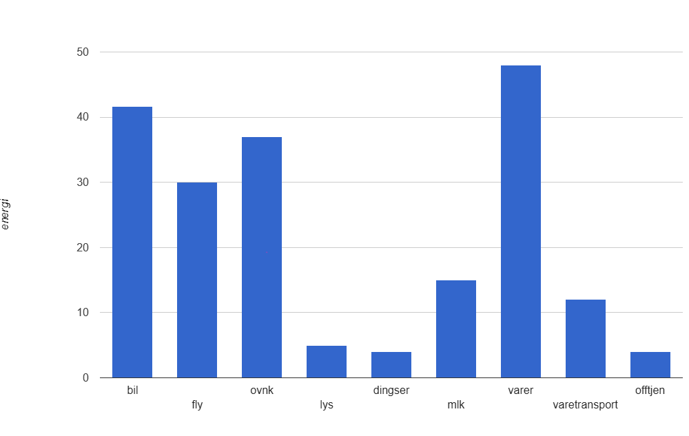

Hjem
Truls Iversen
Lene Olsen
Alex Dimopoulos
Marius Horni
Christoffer Staupe
Isak Galleberg
Hjem
Truls Iversen
Lene Olsen
Alex Dimopoulos
Marius Horni
Christoffer Staupe
Isak Galleberg
 -Lene Olsen
-Lene Olsen
-Universitetet i Agder
-IT & informasjonssytemer
Lene tar bachelor programmet i it og informasjonssystemer. Hun jobber deltid som personlig trener, denne jobben har hun nå hatt i 10 år. Hun har ellers bakgrunn fra mange forskjellige yrker, begynte som grafisk designer/desk assistent ved ett forlag i 2000, senest jobbet hun som produksjonsleder hos en salmaker
Klimafotavtrykket hennes er nok større i kategorien fly enn hva som er gjennomsnittlig, men føtter og el-bil er hennes daglige fremkomstmiddel. Hun spiser helst kjøtt hver dag, noe som hun "kanskje" kan vurdere å kutte ned på.
Bar-chart hentet fra ProgOblig2 etter ønsket fra oppgaven og har ikke noe samnheng med vår egen drøfting.